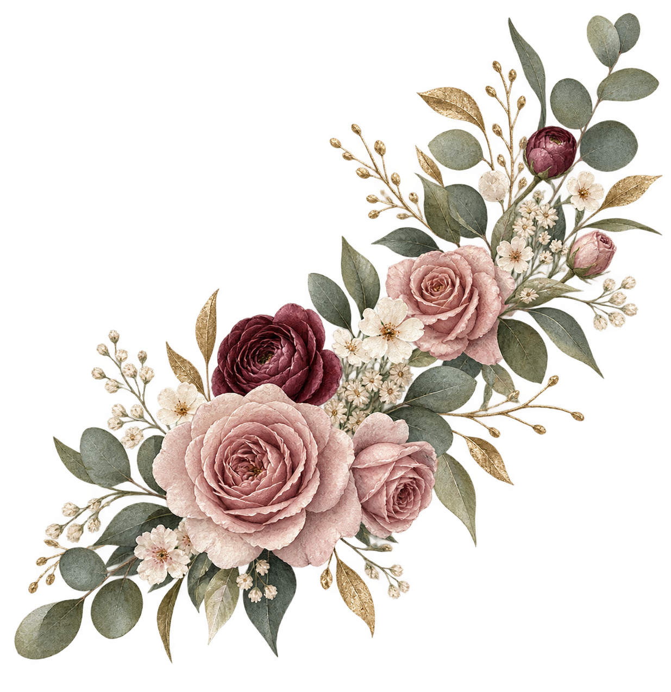

Ceremonia
Misa de Acción de Gracias
Sábado, 9 de enero de 2027
Hora y templo por confirmar
Una celebración, dos historias

Con inmensa alegría celebramos
Mis XV años y mis 3 años
Juarez Cervantes · Solis Juarez
Nuestra invitación
La vida se cuenta en instantes que se vuelven recuerdos. Queremos que seas parte de uno de los nuestros.
“Mi vida es como un cuento de hadas, llena de alegrías y sorpresas inesperadas; hoy me presento como una princesa para invitarte a celebrar.”
Reserva este día
Con la bendición de
Los nombres de nuestros padres
se anunciarán próximamente
Dónde nos encontraremos
Ceremonia
Sábado, 9 de enero de 2027
Hora y templo por confirmar
Celebración
Sábado, 9 de enero de 2027
León, Guanajuato · Hora por confirmar